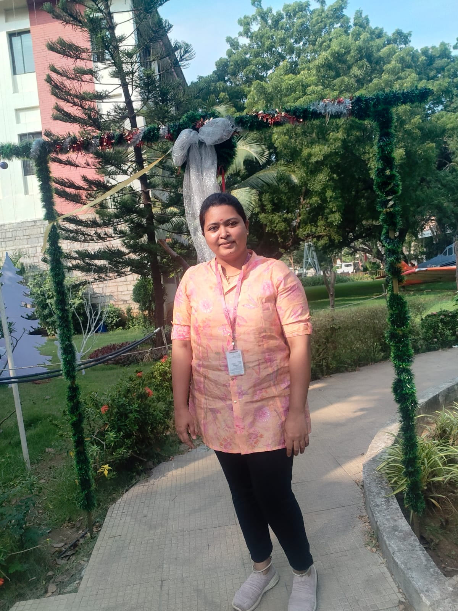

Highlights
🏆 M.Tech First Rank Holder 2025-2026
🎓 Proficiency Award
🔬 Active AI/ML Researcher
AI • MACHINE LEARNING • GENERATIVE AI • RESEARCH
Building intelligent systems through Machine Learning, Deep Learning, Generative AI, Computer Vision, and research-driven engineering.
Explore My WorkDownload Resume
01 / ABOUT ME
I am an AI enthusiast. I enjoy bridging research and practical engineering by developing intelligent, reliable, and impactful AI systems. My long-term interests include Computer Vision, autonomous systems, multimodal learning, trustworthy AI, and research engineering.
🏆 M.Tech First Rank Holder 2025-2026
🎓 Proficiency Award
🔬 Active AI/ML Researcher
02 / EDUCATION
Hindustan Institute of Technology and Science
Anand Institute of Higher Technology
03 / EXPERIENCE & LEARNING
Gained hands-on exposure to AI and software development workflows while strengthening practical engineering and problem-solving skills.
Delivered training and internship classes covering Data Science, Data Analytics, Machine Learning, AI, and Generative AI concepts.
04 / TECHNICAL TOOLKIT
Python • SQL • HTML
Scikit-learn • Model Evaluation • Feature Engineering
PyTorch • pandas• CNNs • Transformers • Computer Vision
LLMs • GAN • Hugging Face • Embeddings
FastAPI • Flask • Streamlit • Git
Power BI • Google Colab
05 / FEATURED PROJECTS
06 / CURRENT RESEARCH
Multi-Modal & Uncertainty-Aware Learning CNN–Transformer fusion of heterogeneous sensor and vibration signals for reliable RUL prediction, enhanced with uncertainty estimation and Explainable AI.
• Developed a multi-modal CNN–Transformer framework for Remaining Useful Life (RUL) prediction by learning complementary representations from heterogeneous sensor and vibration data. The research combines temporal deep learning, uncertainty estimation, and Explainable AI to improve the reliability and interpretability of predictive maintenance models. The proposed framework was evaluated on C-MAPSS and XJTU-SY benchmark datasets.
Multi-Modal CNN–Transformer Framework for Remaining
Useful Life Prediction with Uncertainty Explainability.
• In Proceedings of the 2nd International Conference on
Technologies, Research, Product Developments & Space Science (UICONTRPDS 2026). SCITEPRESS.
07 / CURRENT RESEARCH
My current research is ongoing. To protect originality, I share the broader research direction and technical interests rather than unpublished methodology, experiments, implementation details, or results.
Studying distributed and decentralized optimization techniques for scalable machine learning, with a focus on convex optimization, gradient-based methods, ADMM, consensus algorithms, distributed optimization, and federated learning. Exploring how optimization and learning can be performed efficiently across distributed systems under data heterogeneity, computational heterogeneity, and robustness constraints..
Computer Vision & Deep Learning
Multimodal Learning & Sensor Fusion
Generative AI & Foundation Models
Autonomous & Intelligent Systems
Uncertainty Estimation & AI Safety
👋 Hello! I'm Artemis, Priyadharshini's AI portfolio assistant. I can walk you through her AI/ML projects, research, technical skills, and professional journey. What would you like to explore?